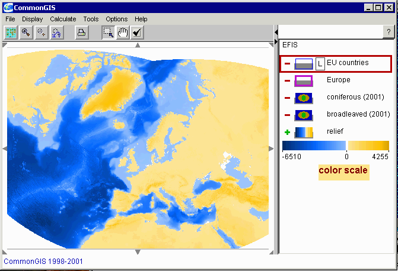

Note that an application (configuration of map layers and tables to be loaded in the system) may include layers that are not loaded immediately. They are not shown in the map but only in the legend and marked in in with "minus" signs. When a raster layer has not yet been loaded, it is not assigned any colour scale. Therefore it appears in the legend like the layers "coniferous (2001)" and "broadleaved (2001)" in the picture above. When the user wishes to load such a layer, he/she needs to click on the "minus" sign of the corresponding legend item. The system will load the layer, assign a default colour scale to it, and draw in on the map. The "minus" sign in the legend will be turned to "plus", and the legend item itself will change to reflect the current encoding of values.
The user can choose different colour scales and manipulate parameters of visualisation, for example, transparency. In order to change the current colour scale for a layer, the user needs to double-click on the colour scale representation in the legend. In response, the system will display a dialogue for colour scale selection and varying colour scale parameters:
The appearance of the dialogue differs depending on what colour scale is currently selected. The invariant parts of the dialogue are the upper controls for setting the transparency and the limits on values to be shown and the lower collection of radio buttons for selection of the scale type. The middle part of the dialogue changes when another colour scale is selected. The set of available colour scales may differ depending on the system configuration.
The upper control of the dialogue (the slider) regulates the transparency of the image constructed from the grid. Note that transparent images look rather ugly under Java versions 1.1.*. In order to use Java versions 1.2.* with Web browsers, you will need to have a Java plug-in installed on your computer.
The controls below the transparency slider are used to restrict the range of values to be shown on the map. The values that do not fit within the limits are not represented on the map. The resulting image may look like in the figure below in which shades of green represent only the values of the raster "coniferous (2001)" that are higher than 10. In order to restrict the represented range of values, one may either drag the triangular delimiters or enter exact values in the text fields (do not forget to press the "Enter" key after you modified the value in a text field).
Different colour scales may have their particular parameters and, hence, particular controls for manipulating them. Thus, the diverging colour scale (used for representing the rasters "relief" and "coniferous (2001)" in the examples above) allows the user to change the colours of its left (negative) and right (positive) ends and to move the position of the midpoint. For example, in the figure above green colour was chosen for positive values in the raster "coniferous (2001)".
The binary colour scale was specially designed for binary rasters, i.e. rasters containing only values 0 and 1. Such rasters result from querying raster data. With the binary colour scale values 1 are represented by some colour (that can be selected by the user) while zero values are not shown. In principle, this type of scale can be also used for non-binary rasters. In this case all positive values are shown in one and the same colour while zero and negative values are not shown. In the figure below the binary colour scale is used to visualise the raster layer "coniferous (2001)".
Suppose, for example, that we wish to calculate the mean value of coniferous for each EU country. Due to the presence of the values -106 inside the contours of the countries (see the enlarged contour of Finland below) the results of calculation will be wrong. For this kind of task it is appropriate to replace the negative values by zeros. This operation can be done in the system using its geocomputational tools.
Here is the sequence of operations needed to replace the negative values in a raster with zeros:
1)
2)
This dialogue lists the geocomputation tools available in the system. The set of the tools may differ depending on the system configuration. In order to invoke a tool, one needs to select the corresponding radio button and press the button "OK". After that the tool starts its work. It may display additional dialogues. In the case of transforming or combining rasters this will be the dialogue shown below.
3)
Enter the formula IF($2<0,0,$2) in the field "Formula" at the bottom of the dialogue. Here $2 stands for "coniferous (2001)" (it is the 2nd item in the list "Fields" in the upper part of the dialogue). You can select the function IF(,,) from the list of functions and press the button "Insert" on the right of the choice element. The expression IF(,,) will appear in the formula field. The expression $2 will be automatically inserted in the formula field when you double-click on the second item in the list "Fields". Signs of arithmetic operations (in particular, "<") can be entered by selecting them in the choice element called "Operations" and then pressing the button "Insert" on the right of it. One may also enter any symbols using the keyboard.
4) When the formula is ready, press the button "OK". The tool
will do the computations. The progress of the computations is shown in
the status line (in the main window of the system, below the map). The
result of the computations is a new layer to be added to the map. You will
be requested to provide a name for the new layer (you may also agree to
the default name generated by the system):
5) After this the new layer will be added
to the map. The system will assign to it a default (grey) scale that can
be changed by the user. For example, one may choose the diverging colour
scale with green right end. In addition, one may remove zero values from
the view by setting the lower limit of the represented value range to 0.01:
The initial layer "coniferous (2001)" may be now switched off (by clicking on the "plus" sign in the legend) or even removed from the system. In the latter case the memory it occupied can be eventually used for other purposes. To remove a layer, select the item "Remove map layer" in the menu "File".
Other transformation operation that may be useful depending on the analysis tasks is smoothing. See, for example, the effect of smoothing the raster "relief":
It is also possible to change such parameters of a raster as the number of columns and rows (resolution), or cell size. This is done by selecting the tool "change parameters of a raster".
Assuming that the values in the rasters "coniferous" and "broadleaved" correspond to the parts of territory covered by coniferous and broadleaved forests, respectively, we would like to calculate the part of territory covered by both kinds of forests in total. For this purpose we select the tool "transform or combine rasters" (Menu "Calculate" > "Geographic computations" > tool selection dialogue). The tool displays its own dialogue for specifying the formula for the computation. We double-click on the item "coniferous (transformed)" in the list "Fields" in the upper part of the dialogue window, then select the operation "+ - arithmetic addition" in the choice element "Operations" and press the button "Insert" on the right of it, and, finally, double-click on the item "broadleaved (transformed)" in the list "Fields". As a result, the text edit field "Formula" at the bottom of the window contains something similar to $2+$3 (the numbers depend on the positions of the items "coniferous (transformed)" and "broadleaved (transformed)" in the list). After the formula is ready, we press OK. Of course, the tool allows to construct a large variety of formulas with the use of the functions and operations listed in the choice elements "Functions" and "Operations".
When the tool finishes the calculations, it proposes to give a name to the resulting new raster layer. We give it the name "forests total". The system, by default, represents the layer using the grey colour scale. We change it to the diverging scale, select green colour for the right end of the scale, and remove zero values from the view by setting the lower limit of the represented value range to 0.01 (see above). The result is shown in the figure below (we moved the vector layers to the top of the legend to make them drawn over the raster layers):
Note that in combining raster layers with different resolutions the cell size of the resulting raster will be set to the maximum cell size of the source rasters. If there is not enough memory for the resulting raster, the system will decrease its resolution until it fits to the available free memory.
In order to find all forests growing on the altitudes between 1000 and 1500 m, we specify the following logical formula:
After this the system performs the calculation. Note that the cell size of the resulting raster will be set to the maximum cell size of the source rasters. If there is not enough memory for the resulting raster, the system will decrease its resolution until it fits to the available free memory.
When the computation is finished, the system proposes to give a name to the new layer. We enter the name "forests on altitudes from 1000 to 1500". After that the layer is shown on the map with the use of the binary colour scale since this is a binary raster with values 1 for the cells satisfying the query and 0 for the cells that do not satisfy the query. The zero values are not shown on the map while the values 1 are shown, by default, in red colour.
In order to change red to some other colour, double-click on the colour scale in the legend. This results in appearing of the dialogue shown below.
After clicking on the "rainbow" icon you will be able to choose a different colour for the scale instead of red.
In this dialogue we select the function "Area". The checkbox "include partial zones" should be checked in this case, otherwise the system will not compute the area of the forests for such countries as Spain: this country includes islands lying beyond the extent of the raster. We enter the desired name of the new attribute, "Area of forests between 1000 and 1500 m altitude", in the edit field "Attribute name:". If we do not specify any name, the system will generate a default name. When we press the button "OK", the system performs the calculations and represents the results on the map: the countries are painted according to the values of the just derived attribute.
In a similar way we can derive the mean values of coverage by coniferous and by broadleaved for the countries. In both cases we select the function "Mean" in the above-described dialogue. To compare the values of the derived attributes "Mean coverage by coniferous" and "Mean coverage by broadleaved", it is convenient to represent these attributes on the map together using parallel bars (menu "Display" > "Display Wizard..." > select the table "EU countries" > select the two derived attributes > select the "parallel bars" visualisation method).
Attributes on the basis of raster data may be also derived for user-defined vector objects. The system allows the user to construct a new map layer by drawing geographical objects on the map using the mouse. The layer constructing/editing tool is activated through the menu "Tools" containing the item "edit or construct a map layer".